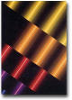

Dedans, une luimière blanche vous arrive dessus, grossit, change de couleur...

Avez vous le talisman et la formule, ou le diamant?
J'ai le diamant
J'ai le talisman et la formule
Je n'ai rien
J'ai le talisman